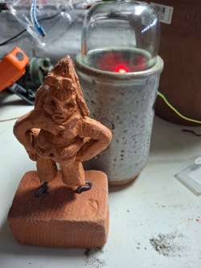
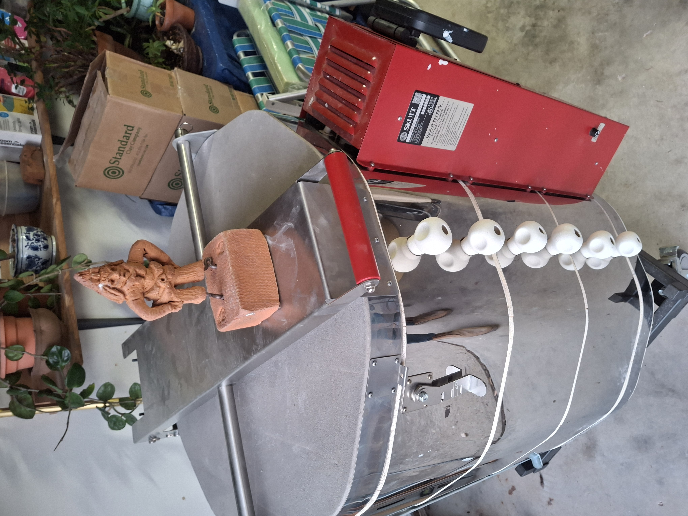

GENE
The kiln watcher.
GENE (Grounded Environmental Node Enclosure) is not a controller, but a presence within the studio. It observes conditions — sound, pressure, time, and temperature — and inhabits them as a changing internal state.
Rather than issuing commands, GENE registers tension. It reflects how a situation feels as it unfolds, allowing the potter to remain the final authority. Meaning emerges through observation, not instruction.
In this way, GENE functions less as a tool and more as a companion system — a quiet witness to process, capable of signaling when conditions begin to diverge from expectation.



Environmental Node Enclosure. Raspberry Pi / ESP32 system. Audio and environmental sensing. Real-time kiln observation.
GENE does not report events directly. Instead, it expresses a condition of arousal derived from sensed change. As tension increases, its presence becomes more legible — through light, timing, and occasional sound.
It may suggest that a firing is proceeding with greater or lesser fidelity to expectation, but never prescribes action. The system remains interpretive, not authoritative.
GENE is a work in progress, continuously evolving. Over time, it may come to register not only the state of the kiln, but the broader atmosphere of the studio itself.